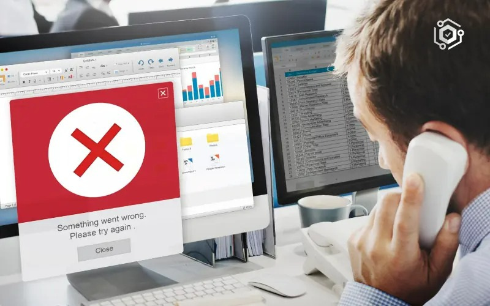
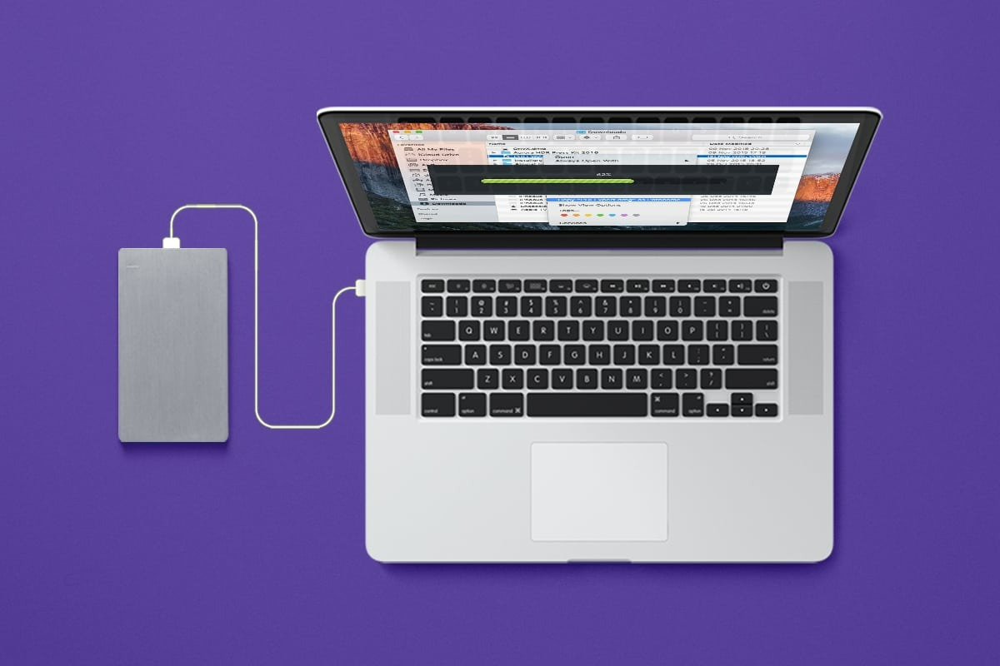
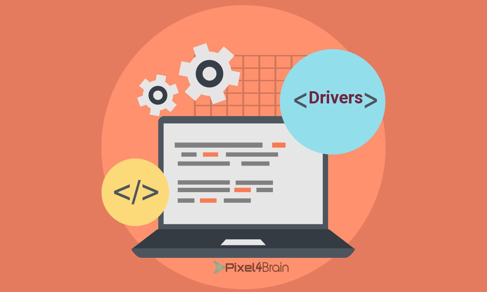

El formateo de una PC consiste en eliminar todos los datos del disco duro y reinstalar el sistema operativo desde cero. Este proceso devuelve el equipo a su estado original de fábrica, eliminando cualquier software, archivos, virus, o problemas de rendimiento que haya acumulado con el tiempo.
Es útil para mejorar la eficiencia de tu equipo y resolver problemas graves.
Con el tiempo, una PC acumula archivos innecesarios, programas que se ejecutan en segundo plano, y restos de instalaciones previas que pueden ralentizar considerablemente su rendimiento. Al formatear, eliminas todo el "peso" extra que está afectando el sistema, devolviéndolo a su estado óptimo. Esto es especialmente útil si sientes que tu PC ya no responde con la misma rapidez que cuando era nueva o si experimentas demoras al abrir aplicaciones o ejecutar tareas básicas. Después de formatear, tu equipo funcionará más ágilmente, permitiéndote aprovechar al máximo su capacidad.
Aunque existen múltiples programas de seguridad y antivirus que pueden eliminar virus y malware, hay situaciones en las que ciertas amenazas son difíciles de erradicar completamente, afectando la estabilidad y seguridad de tu sistema. Formatear es la solución definitiva para asegurarte de que cualquier tipo de malware, spyware o virus desaparezca por completo. Al reinstalar el sistema operativo desde cero, estarás eliminando cualquier archivo dañino que pueda estar oculto, restaurando la tranquilidad y seguridad en tu equipo.
Si tu PC experimenta errores frecuentes, como pantallas azules, fallos del sistema o bloqueos constantes, a menudo estos problemas se deben a conflictos entre programas, archivos corruptos o incluso incompatibilidades de software. Formatear tu equipo te permite empezar desde cero, eliminando todos los problemas relacionados con software o configuraciones defectuosas que pueden ser difíciles de identificar y corregir manualmente. Es una opción ideal cuando otras soluciones no han funcionado y deseas restaurar la estabilidad de tu PC sin complicaciones adicionales.
El formateo borra todo en el disco duro, incluyendo archivos, programas y configuraciones. Es crucial hacer una copia de seguridad de tus datos importantes (documentos, fotos, videos) usando un disco externo o almacenamiento en la nube. Una vez que el formateo comienza, no podrás recuperar los archivos si no has hecho el respaldo previamente.
Después de formatear tu PC, necesitarás reinstalar el sistema operativo y todos los programas que usas habitualmente, como tu suite de ofimática, navegadores de internet, software de diseño o juegos. Además, para que tu equipo funcione correctamente, será necesario reinstalar los controladores para el hardware, como la tarjeta gráfica, la de sonido, y los adaptadores de red. Antes de formatear, descarga estos controladores desde los sitios oficiales de los fabricantes y guárdalos en un lugar seguro. Tener a la mano todas las herramientas y controladores necesarios evitará problemas después del formateo y te ahorrará tiempo al configurar de nuevo tu equipo.
Aunque formatear una PC puede parecer un proceso sencillo, implica una serie de pasos técnicos que, si se realizan incorrectamente, podrían ocasionar problemas adicionales, como la instalación incompleta del sistema operativo o la pérdida de archivos esenciales. Si no tienes experiencia en formateo o no estás seguro de cómo hacerlo correctamente, es recomendable que consultes con un profesional en informática. Un técnico experimentado puede garantizar que el proceso se realice sin contratiempos, asegurando que tu equipo quede completamente funcional y optimizado. Además, puede ofrecerte recomendaciones personalizadas sobre cómo mantener el buen rendimiento de tu PC después del formateo.
Es crucial mantener tu sistema operativo y todos los programas que utilices en su versión más reciente. Las actualizaciones no solo traen nuevas funciones, sino también importantes parches de seguridad que protegen tu equipo de vulnerabilidades. Si no actualizas regularmente, puedes exponerte a virus y malware que afecten el rendimiento y la estabilidad de tu PC, lo que eventualmente podría llevarte a la necesidad de formatear.
Un buen software antivirus es tu primera línea de defensa contra amenazas como virus, troyanos, spyware y ransomware. Asegúrate de que el antivirus esté siempre actualizado y realiza escaneos periódicos del sistema para detectar y eliminar cualquier archivo o programa malicioso. De esta forma, evitarás que el malware dañe tu equipo, manteniéndolo limpio y protegido sin necesidad de formatear.
Con el tiempo, es común que instalemos programas que ya no usamos o que no son necesarios para el día a día. Estos programas ocupan espacio en el disco duro y algunos incluso se ejecutan en segundo plano, consumiendo recursos del sistema. Desinstalar regularmente software que ya no necesitas no solo libera espacio, sino que también mejora el rendimiento. Además, optimizar los programas que se inician junto con Windows reducirá el tiempo de arranque y evitará que tu PC se ralentice por procesos innecesarios.
Acumular archivos temporales, cachés, y datos residuales puede afectar el rendimiento de tu PC. Herramientas como CCleaner o las herramientas integradas de limpieza de disco en Windows pueden ayudarte a eliminar estos archivos y liberar espacio en tu equipo. Una limpieza periódica evitará la saturación del disco duro, manteniendo el sistema ágil y funcionando correctamente.
Asegurarte de tener copias de seguridad actualizadas no solo es importante para proteger tus datos en caso de fallos del sistema, sino que también puede evitar la necesidad de formatear por errores graves. Si algo sale mal, puedes restaurar tu sistema a un punto anterior sin necesidad de formatear completamente. Windows ofrece opciones de restauración del sistema que puedes configurar para hacer respaldos automáticos.
El rendimiento de tu PC también depende del buen estado de los componentes de hardware, especialmente el disco duro. Utiliza herramientas como CrystalDiskInfo para monitorear la salud de tu disco. Si detectas errores en el disco a tiempo, podrás repararlos o reemplazar el hardware sin llegar al punto de necesitar un formateo. Además, asegúrate de limpiar el polvo de tu PC regularmente para evitar sobrecalentamiento, lo cual también puede dañar el hardware y reducir el rendimiento.